AREA07–20 실제 최종 자산 비교
사용자 승인 전 검토 · 게임 실행 NOT_CHECKED · 제작 원본 PNG는 최종 ICON에서 제외하여 표시. 파일 기반 재생이며 마지막 프레임 후500ms 간격.
전체 검증 기록 · 스킬별 판정AREA_07 좀비버섯 / 죽은 포자의 끈기 — 유지 가능
몬스터/스킬의 선언 소재와 대표 형상이 연결되고, 명암층·주 실루엣·ICON의 형태 언어가 양립한다. 필수 원화 변경을 요구할 명확한 문제는 이번 정적 프레임 검토에서 찾지 못했다.
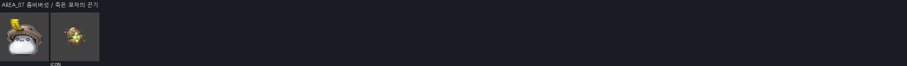
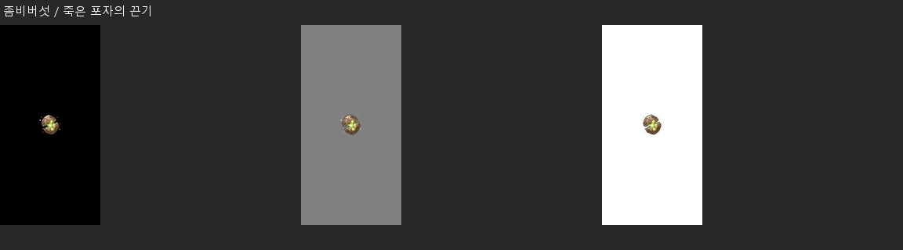
- 핵심 소재: 마른 포자 덩이가 꺼지지 않고 다시 붙는 탁한 생기. ‘좀비버섯 / 죽은 포자의 끈기’ 전용 소재이며 몬스터 본체는 VFX에 직접 넣지 않음
- 진행 방향: 마른 포자 덩이가 꺼지지 않고 다시 붙는 탁한 생기의 대표 결만 바깥으로 8~15% 맥동하고 이동 궤적은 만들지 않음
- 아이콘 핵심 모티브: 대표 실루엣 1개는 ‘갈라진 포자핵’, 보조 효과 1개는 ‘되붙는 점’. 64px 축소에서도 두 형상의 겹침과 방향이 읽혀야 함
- VFX: 6 frames, 각 256×256 RGBA PNG, 약 0.10 sec/frame
포이즌 미스트 · 정기 뿌리기 / 정기 뿌리기 강화AREA_07 카파 드레이크 / 청동 비늘 — 유지 가능
몬스터/스킬의 선언 소재와 대표 형상이 연결되고, 명암층·주 실루엣·ICON의 형태 언어가 양립한다. 필수 원화 변경을 요구할 명확한 문제는 이번 정적 프레임 검토에서 찾지 못했다.
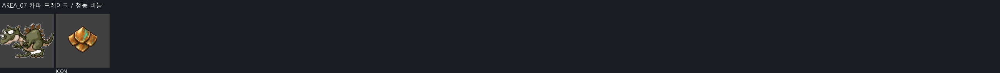
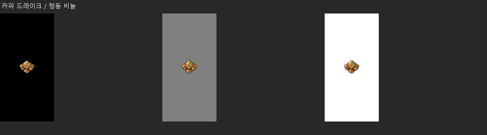
- 핵심 소재: 청동 비늘 조각이 비스듬히 포개지는 방호판. ‘카파 드레이크 / 청동 비늘’ 전용 소재이며 몬스터 본체는 VFX에 직접 넣지 않음
- 진행 방향: 청동 비늘 조각이 비스듬히 포개지는 방호판의 대표 결만 바깥으로 8~15% 맥동하고 이동 궤적은 만들지 않음
- 아이콘 핵심 모티브: 대표 실루엣 1개는 ‘청동 비늘판’, 보조 효과 1개는 ‘녹청 반사광’. 64px 축소에서도 두 형상의 겹침과 방향이 읽혀야 함
- VFX: 6 frames, 각 256×256 RGBA PNG, 약 0.10 sec/frame
로얄 가드 VI · 토파류 : 지 VIAREA_07 드레이크 / 동굴 용염 — 권장
불꽃 방향·성장·해체는 맞는다. 작은 크기에서 검붉은 잔입자가 거칠게 뭉친다. AREA00의 면 분리와 비교해 주 화염 면을 정리하는 부분 보정을 권장한다.
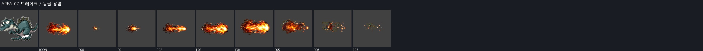
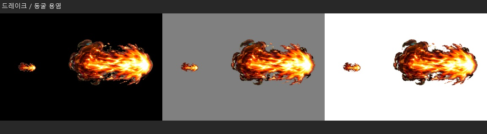

- 핵심 소재: 동굴 입김처럼 좁게 시작해 넓어지는 붉은 용염. ‘드레이크 / 동굴 용염’ 전용 소재이며 몬스터 본체는 VFX에 직접 넣지 않음
- 진행 방향: 동굴 입김처럼 좁게 시작해 넓어지는 붉은 용염이 오른쪽 한 방향으로 이동하고 꼬리·잔상은 발사점 쪽에만 남김
- 아이콘 핵심 모티브: 대표 실루엣 1개는 ‘용의 불꽃 숨결’, 보조 효과 1개는 ‘동굴 연기’. 64px 축소에서도 두 형상의 겹침과 방향이 읽혀야 함
- VFX: 8 frames, 각 384×384 RGBA PNG, 약 0.10 sec/frame
오비탈 플레임 VI · 인퍼널 브레스AREA_07 와일드카고 / 야수의 그림자 돌진 — 유지 가능
몬스터/스킬의 선언 소재와 대표 형상이 연결되고, 명암층·주 실루엣·ICON의 형태 언어가 양립한다. 필수 원화 변경을 요구할 명확한 문제는 이번 정적 프레임 검토에서 찾지 못했다.
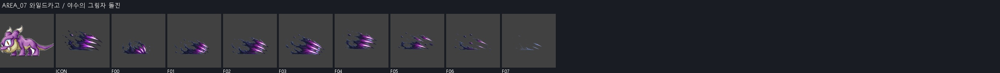
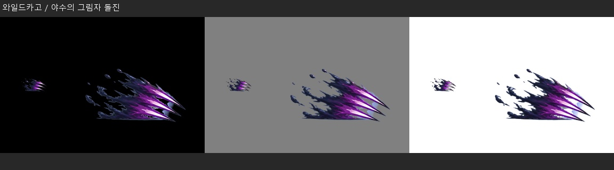

- 핵심 소재: 검은 야수 발톱 세 줄과 몸을 낮춘 전방 그림자 잔상. ‘와일드카고 / 야수의 그림자 돌진’ 전용 소재이며 몬스터 본체는 VFX에 직접 넣지 않음
- 진행 방향: 검은 야수 발톱 세 줄과 몸을 낮춘 전방 그림자 잔상이 오른쪽으로 압축·가속하고 충돌점에서 짧게 넓어진 뒤 반대 방향 파편 없이 소멸
- 아이콘 핵심 모티브: 대표 실루엣 1개는 ‘세 줄 발톱’, 보조 효과 1개는 ‘낮은 돌진 그림자’. 64px 축소에서도 두 형상의 겹침과 방향이 읽혀야 함
- VFX: 8 frames, 각 384×384 RGBA PNG, 약 0.10 sec/frame
[처형] 포이즌 니들 · 엔드리스 다크니스AREA_07 주니어 발록 / 발록의 화염 파동 — 권장
뿔 고리와 전방 파동이 식별된다. 해체 구간의 검붉은 작은 덩어리가 많이 남아 주 실루엣보다 질감이 앞선다. 잔입자·중간톤 정리 대상으로 남긴다.
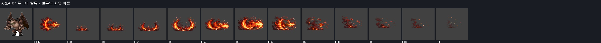
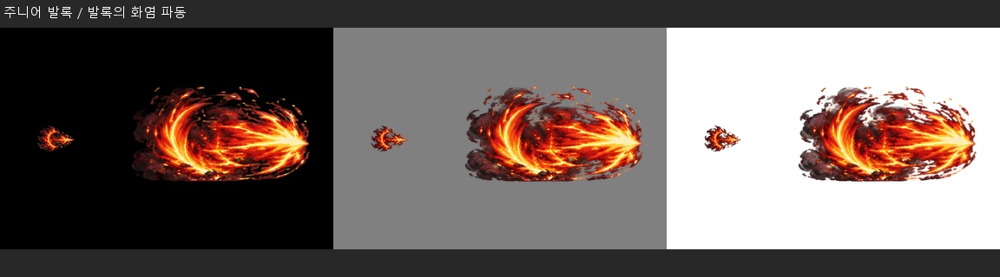

- 핵심 소재: 발록 뿔을 닮은 화염 고리가 전방으로 밀리는 파동. ‘주니어 발록 / 발록의 화염 파동’ 전용 소재이며 몬스터 본체는 VFX에 직접 넣지 않음
- 진행 방향: 발록 뿔을 닮은 화염 고리가 전방으로 밀리는 파동이 중심에서 방사 또는 수직으로 확장하고 절정 뒤 파편은 원점으로 되감기지 않음
- 아이콘 핵심 모티브: 대표 실루엣 1개는 ‘발록 뿔 고리’, 보조 효과 1개는 ‘화염 파동’. 64px 축소에서도 두 형상의 겹침과 방향이 읽혀야 함
- VFX: 12 frames, 각 512×512 RGBA PNG, 약 0.08 sec/frame
오비탈 플레임 VI · 인퍼널 브레스AREA_07 타우로마시스 / 수문장의 낙뢰 — 유지 가능
몬스터/스킬의 선언 소재와 대표 형상이 연결되고, 명암층·주 실루엣·ICON의 형태 언어가 양립한다. 필수 원화 변경을 요구할 명확한 문제는 이번 정적 프레임 검토에서 찾지 못했다.
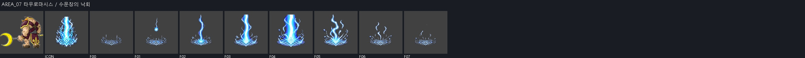
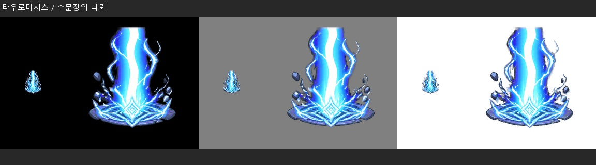

- 핵심 소재: 미궁 수문 표식 위로 떨어지는 굵은 청백 낙뢰. ‘타우로마시스 / 수문장의 낙뢰’ 전용 소재이며 몬스터 본체는 VFX에 직접 넣지 않음
- 진행 방향: 미궁 수문 표식 위로 떨어지는 굵은 청백 낙뢰이 중심에서 방사 또는 수직으로 확장하고 절정 뒤 파편은 원점으로 되감기지 않음
- 아이콘 핵심 모티브: 대표 실루엣 1개는 ‘수문 문양’, 보조 효과 1개는 ‘수직 번개’. 64px 축소에서도 두 형상의 겹침과 방향이 읽혀야 함
- VFX: 8 frames, 각 384×384 RGBA PNG, 약 0.10 sec/frame
체인 라이트닝 VI · 로얄 가드 VIAREA_08 스타픽시 / 별빛 탄환 — 유지 가능
몬스터/스킬의 선언 소재와 대표 형상이 연결되고, 명암층·주 실루엣·ICON의 형태 언어가 양립한다. 필수 원화 변경을 요구할 명확한 문제는 이번 정적 프레임 검토에서 찾지 못했다.
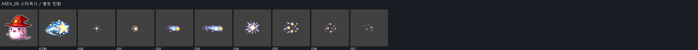
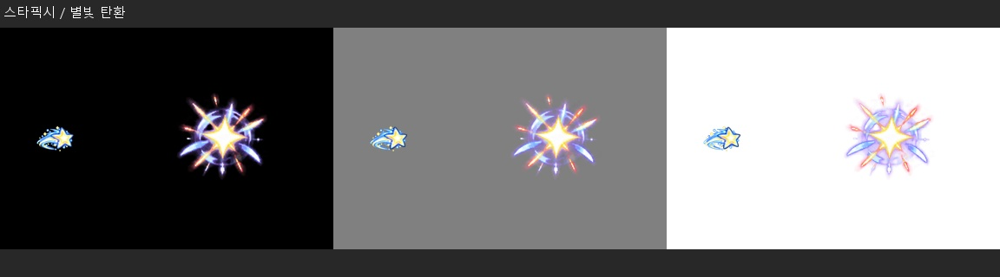

- 핵심 소재: 작은 별핵이 꼬리별 잔상을 달고 직선으로 날아가는 탄. ‘스타픽시 / 별빛 탄환’ 전용 소재이며 몬스터 본체는 VFX에 직접 넣지 않음
- 진행 방향: 작은 별핵이 꼬리별 잔상을 달고 직선으로 날아가는 탄이 오른쪽 한 방향으로 이동하고 꼬리·잔상은 발사점 쪽에만 남김
- 아이콘 핵심 모티브: 대표 실루엣 1개는 ‘오각 별탄’, 보조 효과 1개는 ‘꼬리별 잔상’. 64px 축소에서도 두 형상의 겹침과 방향이 읽혀야 함
- VFX: 8 frames, 각 384×384 RGBA PNG, 약 0.10 sec/frame
소울 시커 VI · 버블 스타 / 버블 스타 강화AREA_08 주니어 샐리온 / 붉은 뿔의 기백 — 유지 가능
몬스터/스킬의 선언 소재와 대표 형상이 연결되고, 명암층·주 실루엣·ICON의 형태 언어가 양립한다. 필수 원화 변경을 요구할 명확한 문제는 이번 정적 프레임 검토에서 찾지 못했다.
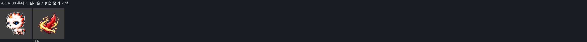
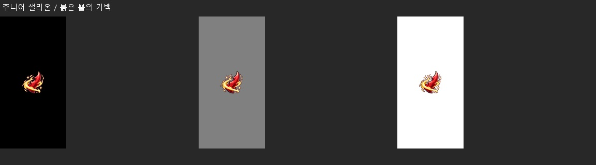
- 핵심 소재: 붉은 뿔 끝에서 솟는 짧은 기백 불꽃과 압력 고리. ‘주니어 샐리온 / 붉은 뿔의 기백’ 전용 소재이며 몬스터 본체는 VFX에 직접 넣지 않음
- 진행 방향: 붉은 뿔 끝에서 솟는 짧은 기백 불꽃과 압력 고리의 대표 결만 바깥으로 8~15% 맥동하고 이동 궤적은 만들지 않음
- 아이콘 핵심 모티브: 대표 실루엣 1개는 ‘붉은 뿔’, 보조 효과 1개는 ‘기백 고리’. 64px 축소에서도 두 형상의 겹침과 방향이 읽혀야 함
- VFX: 6 frames, 각 256×256 RGBA PNG, 약 0.10 sec/frame
오비탈 플레임 VI · 정기 뿌리기 / 정기 뿌리기 강화AREA_08 루나픽시 / 월광 구슬 — 유지 가능
몬스터/스킬의 선언 소재와 대표 형상이 연결되고, 명암층·주 실루엣·ICON의 형태 언어가 양립한다. 필수 원화 변경을 요구할 명확한 문제는 이번 정적 프레임 검토에서 찾지 못했다.
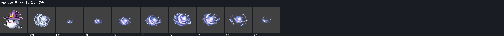
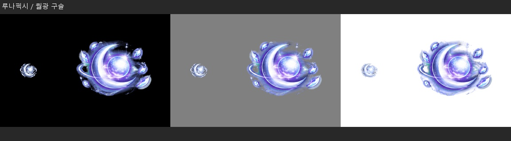

- 핵심 소재: 초승달 안에 맺힌 월광 구슬과 은빛 궤도. ‘루나픽시 / 월광 구슬’ 전용 소재이며 몬스터 본체는 VFX에 직접 넣지 않음
- 진행 방향: 초승달 안에 맺힌 월광 구슬과 은빛 궤도의 고유 결을 따라 한 번 확장·수축하며 불필요한 화면 횡단은 하지 않음
- 아이콘 핵심 모티브: 대표 실루엣 1개는 ‘초승달 구슬’, 보조 효과 1개는 ‘은빛 궤도’. 64px 축소에서도 두 형상의 겹침과 방향이 읽혀야 함
- VFX: 8 frames, 각 384×384 RGBA PNG, 약 0.10 sec/frame
소울 시커 VI · 버블 스타 / 버블 스타 강화AREA_08 러스터픽시 / 태양빛 잔상 — 유지 가능
몬스터/스킬의 선언 소재와 대표 형상이 연결되고, 명암층·주 실루엣·ICON의 형태 언어가 양립한다. 필수 원화 변경을 요구할 명확한 문제는 이번 정적 프레임 검토에서 찾지 못했다.
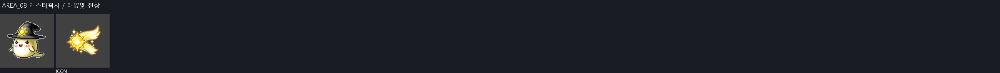
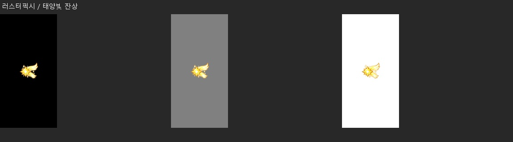
- 핵심 소재: 작은 태양핵이 날개처럼 갈라지는 황금 잔상. ‘러스터픽시 / 태양빛 잔상’ 전용 소재이며 몬스터 본체는 VFX에 직접 넣지 않음
- 진행 방향: 작은 태양핵이 날개처럼 갈라지는 황금 잔상의 대표 결만 바깥으로 8~15% 맥동하고 이동 궤적은 만들지 않음
- 아이콘 핵심 모티브: 대표 실루엣 1개는 ‘태양핵’, 보조 효과 1개는 ‘날개형 잔상’. 64px 축소에서도 두 형상의 겹침과 방향이 읽혀야 함
- VFX: 6 frames, 각 256×256 RGBA PNG, 약 0.10 sec/frame
소울 시커 VI · 미스트랄 스프링AREA_08 엘리쟈 / 여신의 정원 폭풍 — 유지 가능
몬스터/스킬의 선언 소재와 대표 형상이 연결되고, 명암층·주 실루엣·ICON의 형태 언어가 양립한다. 필수 원화 변경을 요구할 명확한 문제는 이번 정적 프레임 검토에서 찾지 못했다.
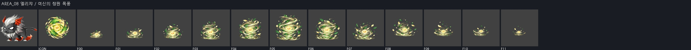
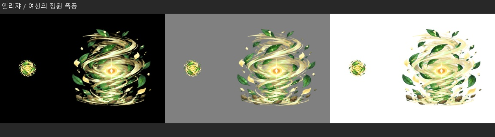

- 핵심 소재: 정원 잎과 꽃잎을 감아 올리는 여신풍 나선 폭풍. ‘엘리쟈 / 여신의 정원 폭풍’ 전용 소재이며 몬스터 본체는 VFX에 직접 넣지 않음
- 진행 방향: 정원 잎과 꽃잎을 감아 올리는 여신풍 나선 폭풍이 중심에서 방사 또는 수직으로 확장하고 절정 뒤 파편은 원점으로 되감기지 않음
- 아이콘 핵심 모티브: 대표 실루엣 1개는 ‘잎사귀 나선’, 보조 효과 1개는 ‘황금 바람눈’. 64px 축소에서도 두 형상의 겹침과 방향이 읽혀야 함
- VFX: 12 frames, 각 512×512 RGBA PNG, 약 0.08 sec/frame
하울링 게일 / 하울링 게일 강화 · 미스트랄 스프링AREA_09 주니어 예티 / 설인의 체온 — 유지 가능
몬스터/스킬의 선언 소재와 대표 형상이 연결되고, 명암층·주 실루엣·ICON의 형태 언어가 양립한다. 필수 원화 변경을 요구할 명확한 문제는 이번 정적 프레임 검토에서 찾지 못했다.
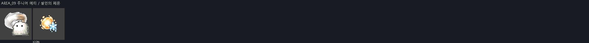
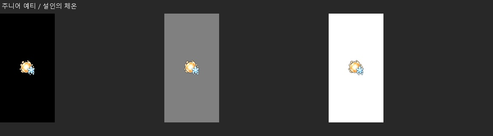
- 핵심 소재: 둥근 온기핵 주변에서 녹아내리는 작은 눈송이. ‘주니어 예티 / 설인의 체온’ 전용 소재이며 몬스터 본체는 VFX에 직접 넣지 않음
- 진행 방향: 둥근 온기핵 주변에서 녹아내리는 작은 눈송이의 대표 결만 바깥으로 8~15% 맥동하고 이동 궤적은 만들지 않음
- 아이콘 핵심 모티브: 대표 실루엣 1개는 ‘온기핵’, 보조 효과 1개는 ‘녹는 눈송이’. 64px 축소에서도 두 형상의 겹침과 방향이 읽혀야 함
- VFX: 6 frames, 각 256×256 RGBA PNG, 약 0.10 sec/frame
정기 뿌리기 / 정기 뿌리기 강화 · 블리자드 VIAREA_09 다크 주니어 예티 / 검은 설원의 은폐 — 유지 가능
몬스터/스킬의 선언 소재와 대표 형상이 연결되고, 명암층·주 실루엣·ICON의 형태 언어가 양립한다. 필수 원화 변경을 요구할 명확한 문제는 이번 정적 프레임 검토에서 찾지 못했다.
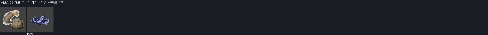
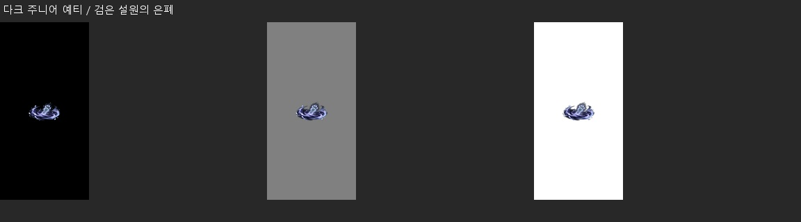
- 핵심 소재: 검은 설분이 몸 둘레를 닫는 낮은 은폐 소용돌이. ‘다크 주니어 예티 / 검은 설원의 은폐’ 전용 소재이며 몬스터 본체는 VFX에 직접 넣지 않음
- 진행 방향: 검은 설분이 몸 둘레를 닫는 낮은 은폐 소용돌이의 대표 결만 바깥으로 8~15% 맥동하고 이동 궤적은 만들지 않음
- 아이콘 핵심 모티브: 대표 실루엣 1개는 ‘검은 눈소용돌이’, 보조 효과 1개는 ‘희미한 발자국’. 64px 축소에서도 두 형상의 겹침과 방향이 읽혀야 함
- VFX: 6 frames, 각 256×256 RGBA PNG, 약 0.10 sec/frame
헥스 : 샌드스톰 · 엔드리스 다크니스AREA_09 헥터 / 설원 늑대 발톱 — 권장
세 갈래 설원 참격은 맞으나 F03에서 둥근 휘감기 형상으로 바뀌었다가 F04에 다시 발톱이 커진다. 참격 개수와 방향 연결을 다듬을 여지가 있다.
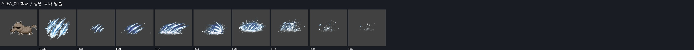
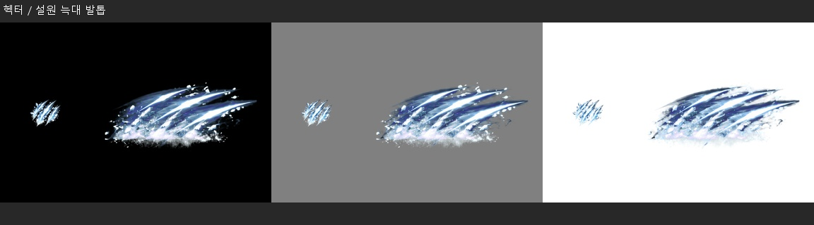

- 핵심 소재: 늑대 발톱 세 갈래가 눈가루를 베어내는 전방 참격. ‘헥터 / 설원 늑대 발톱’ 전용 소재이며 몬스터 본체는 VFX에 직접 넣지 않음
- 진행 방향: 늑대 발톱 세 갈래가 눈가루를 베어내는 전방 참격이 오른쪽으로 압축·가속하고 충돌점에서 짧게 넓어진 뒤 반대 방향 파편 없이 소멸
- 아이콘 핵심 모티브: 대표 실루엣 1개는 ‘세 갈래 늑대발톱’, 보조 효과 1개는 ‘눈가루’. 64px 축소에서도 두 형상의 겹침과 방향이 읽혀야 함
- VFX: 8 frames, 각 384×384 RGBA PNG, 약 0.10 sec/frame
[처형] 포이즌 니들 · 블리자드 VIAREA_09 화이트팽 / 화이트팽의 빙설 송곳니 — 유지 가능
몬스터/스킬의 선언 소재와 대표 형상이 연결되고, 명암층·주 실루엣·ICON의 형태 언어가 양립한다. 필수 원화 변경을 요구할 명확한 문제는 이번 정적 프레임 검토에서 찾지 못했다.
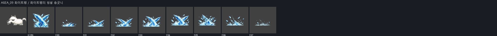
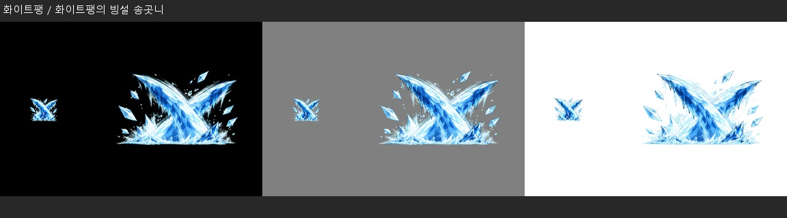

- 핵심 소재: 송곳니 두 개가 얼음 능선처럼 교차하는 빙설 타격. ‘화이트팽 / 화이트팽의 빙설 송곳니’ 전용 소재이며 몬스터 본체는 VFX에 직접 넣지 않음
- 진행 방향: 송곳니 두 개가 얼음 능선처럼 교차하는 빙설 타격이 오른쪽으로 압축·가속하고 충돌점에서 짧게 넓어진 뒤 반대 방향 파편 없이 소멸
- 아이콘 핵심 모티브: 대표 실루엣 1개는 ‘교차 송곳니’, 보조 효과 1개는 ‘얼음 조각’. 64px 축소에서도 두 형상의 겹침과 방향이 읽혀야 함
- VFX: 8 frames, 각 384×384 RGBA PNG, 약 0.10 sec/frame
블리자드 VI · 스크류 펀치 / 스크류 펀치 강화AREA_09 설산의 마녀 / 추방자의 눈보라 — 유지 가능
몬스터/스킬의 선언 소재와 대표 형상이 연결되고, 명암층·주 실루엣·ICON의 형태 언어가 양립한다. 필수 원화 변경을 요구할 명확한 문제는 이번 정적 프레임 검토에서 찾지 못했다.
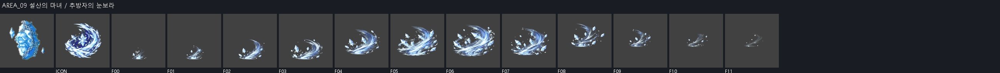
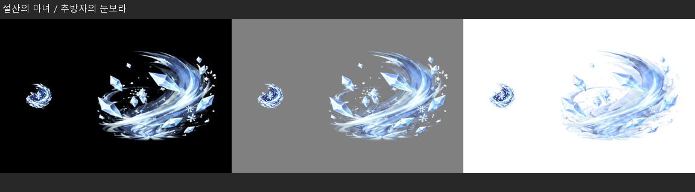

- 핵심 소재: 마녀의 굽은 설풍 고리가 눈결정을 끌어당기는 폭풍. ‘설산의 마녀 / 추방자의 눈보라’ 전용 소재이며 몬스터 본체는 VFX에 직접 넣지 않음
- 진행 방향: 마녀의 굽은 설풍 고리가 눈결정을 끌어당기는 폭풍이 중심에서 방사 또는 수직으로 확장하고 절정 뒤 파편은 원점으로 되감기지 않음
- 아이콘 핵심 모티브: 대표 실루엣 1개는 ‘굽은 설풍 고리’, 보조 효과 1개는 ‘눈결정’. 64px 축소에서도 두 형상의 겹침과 방향이 읽혀야 함
- VFX: 12 frames, 각 512×512 RGBA PNG, 약 0.08 sec/frame
하울링 게일 / 하울링 게일 강화 · 블리자드 VIAREA_10 버블피쉬 / 기포막 — 유지 가능
몬스터/스킬의 선언 소재와 대표 형상이 연결되고, 명암층·주 실루엣·ICON의 형태 언어가 양립한다. 필수 원화 변경을 요구할 명확한 문제는 이번 정적 프레임 검토에서 찾지 못했다.
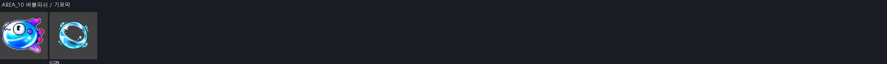
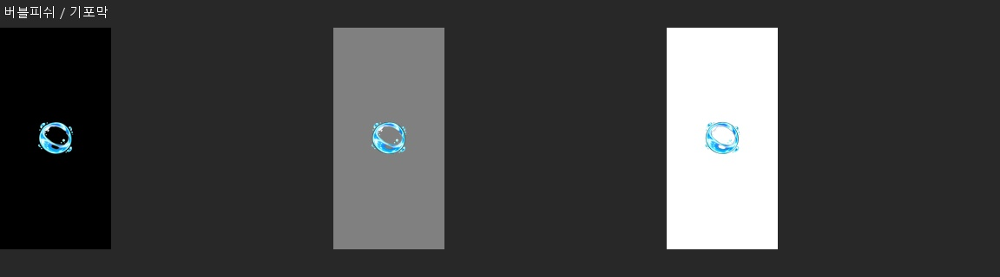
- 핵심 소재: 물고기 비늘광이 비치는 둥근 기포 보호막. ‘버블피쉬 / 기포막’ 전용 소재이며 몬스터 본체는 VFX에 직접 넣지 않음
- 진행 방향: 물고기 비늘광이 비치는 둥근 기포 보호막의 대표 결만 바깥으로 8~15% 맥동하고 이동 궤적은 만들지 않음
- 아이콘 핵심 모티브: 대표 실루엣 1개는 ‘큰 기포막’, 보조 효과 1개는 ‘비늘 반사광’. 64px 축소에서도 두 형상의 겹침과 방향이 읽혀야 함
- VFX: 6 frames, 각 256×256 RGBA PNG, 약 0.10 sec/frame
워터실드 · 분출 : 너울이는 강 VIAREA_10 마스크피쉬 / 가면 아래의 감각 — 유지 가능
몬스터/스킬의 선언 소재와 대표 형상이 연결되고, 명암층·주 실루엣·ICON의 형태 언어가 양립한다. 필수 원화 변경을 요구할 명확한 문제는 이번 정적 프레임 검토에서 찾지 못했다.
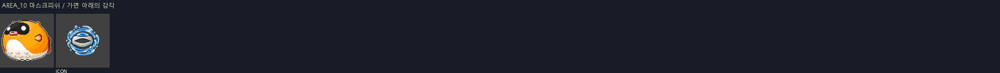
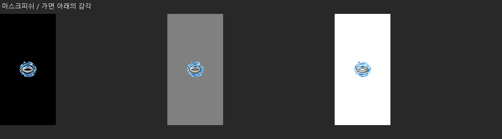
- 핵심 소재: 가면 눈구멍 모양의 감지광과 동심 수중 파문. ‘마스크피쉬 / 가면 아래의 감각’ 전용 소재이며 몬스터 본체는 VFX에 직접 넣지 않음
- 진행 방향: 가면 눈구멍 모양의 감지광과 동심 수중 파문의 대표 결만 바깥으로 8~15% 맥동하고 이동 궤적은 만들지 않음
- 아이콘 핵심 모티브: 대표 실루엣 1개는 ‘가면 눈구멍’, 보조 효과 1개는 ‘감지 파문’. 64px 축소에서도 두 형상의 겹침과 방향이 읽혀야 함
- VFX: 6 frames, 각 256×256 RGBA PNG, 약 0.10 sec/frame
소울 레조넌스 / 소울 레조넌스 강화 · 워터실드AREA_10 스퀴드 / 심해 먹물 폭발 — 유지 가능
몬스터/스킬의 선언 소재와 대표 형상이 연결되고, 명암층·주 실루엣·ICON의 형태 언어가 양립한다. 필수 원화 변경을 요구할 명확한 문제는 이번 정적 프레임 검토에서 찾지 못했다.
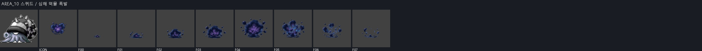
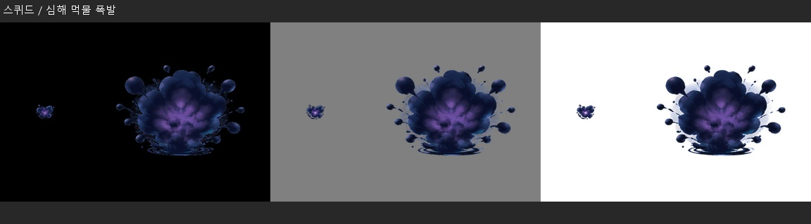

- 핵심 소재: 농도 높은 먹물핵이 물속에서 둥글게 폭발하는 검은 구름. ‘스퀴드 / 심해 먹물 폭발’ 전용 소재이며 몬스터 본체는 VFX에 직접 넣지 않음
- 진행 방향: 농도 높은 먹물핵이 물속에서 둥글게 폭발하는 검은 구름이 중심에서 방사 또는 수직으로 확장하고 절정 뒤 파편은 원점으로 되감기지 않음
- 아이콘 핵심 모티브: 대표 실루엣 1개는 ‘먹물핵’, 보조 효과 1개는 ‘둥근 심해 폭발’. 64px 축소에서도 두 형상의 겹침과 방향이 읽혀야 함
- VFX: 8 frames, 각 384×384 RGBA PNG, 약 0.10 sec/frame
포이즌 미스트 · 분출 : 너울이는 강 VIAREA_10 샤크 / 포식자의 수류탄 — 유지 가능
몬스터/스킬의 선언 소재와 대표 형상이 연결되고, 명암층·주 실루엣·ICON의 형태 언어가 양립한다. 필수 원화 변경을 요구할 명확한 문제는 이번 정적 프레임 검토에서 찾지 못했다.
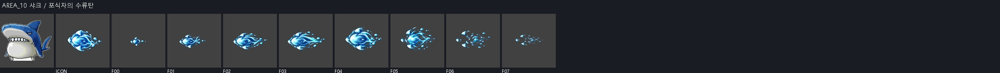
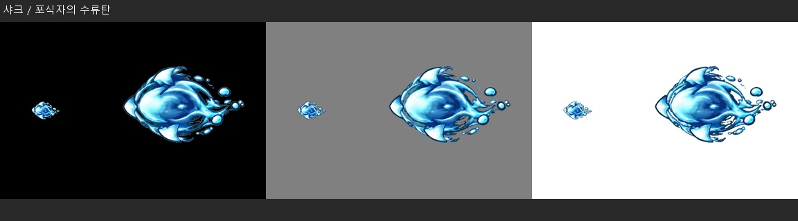

- 핵심 소재: 이빨 톱니가 둘린 압축 수류탄과 기포 꼬리. ‘샤크 / 포식자의 수류탄’ 전용 소재이며 몬스터 본체는 VFX에 직접 넣지 않음
- 진행 방향: 이빨 톱니가 둘린 압축 수류탄과 기포 꼬리이 오른쪽 한 방향으로 이동하고 꼬리·잔상은 발사점 쪽에만 남김
- 아이콘 핵심 모티브: 대표 실루엣 1개는 ‘이빨 수류탄’, 보조 효과 1개는 ‘기포 꼬리’. 64px 축소에서도 두 형상의 겹침과 방향이 읽혀야 함
- VFX: 8 frames, 각 384×384 RGBA PNG, 약 0.10 sec/frame
버블 스타 / 버블 스타 강화 · 분출 : 너울이는 강 VIAREA_10 피아누스 / 심해왕의 광선 — 보정 필요
F05~F07의 밝은 수평 빔 끝이 수직 직선으로 동시에 끊긴다. 최외곽 접촉 검사는 통과해도 내부 형상 마감 문제는 남는다. 원본 시트 대조 후 끝 형상을 복구할 것. 기존 가장자리 검사 PASS를 전체 아트 PASS로 해석하면 안 된다.
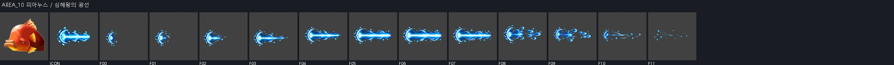
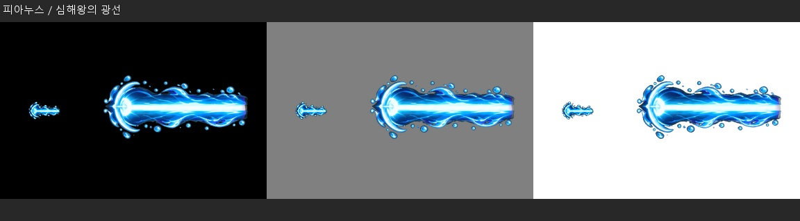

- 핵심 소재: 심해 왕관형 발광기관에서 뻗는 굵은 수평 광선. ‘피아누스 / 심해왕의 광선’ 전용 소재이며 몬스터 본체는 VFX에 직접 넣지 않음
- 진행 방향: 심해 왕관형 발광기관에서 뻗는 굵은 수평 광선이 오른쪽 한 방향으로 이동하고 꼬리·잔상은 발사점 쪽에만 남김
- 아이콘 핵심 모티브: 대표 실루엣 1개는 ‘심해 왕관핵’, 보조 효과 1개는 ‘수평 광선’. 64px 축소에서도 두 형상의 겹침과 방향이 읽혀야 함
- VFX: 12 frames, 각 512×512 RGBA PNG, 약 0.08 sec/frame
브레스 오브 어스 · 분출 : 너울이는 강 VIAREA_11 라츠 / 태엽쥐의 민첩 — 유지 가능
몬스터/스킬의 선언 소재와 대표 형상이 연결되고, 명암층·주 실루엣·ICON의 형태 언어가 양립한다. 필수 원화 변경을 요구할 명확한 문제는 이번 정적 프레임 검토에서 찾지 못했다.
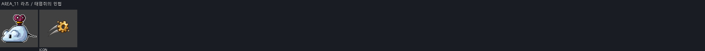
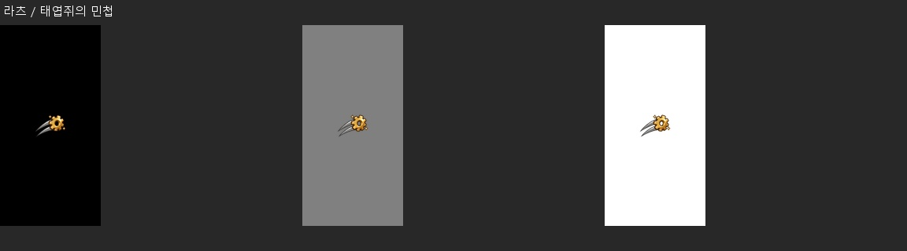
- 핵심 소재: 작은 태엽 톱니가 빠르게 맞물리는 민첩 잔상. ‘라츠 / 태엽쥐의 민첩’ 전용 소재이며 몬스터 본체는 VFX에 직접 넣지 않음
- 진행 방향: 작은 태엽 톱니가 빠르게 맞물리는 민첩 잔상의 대표 결만 바깥으로 8~15% 맥동하고 이동 궤적은 만들지 않음
- 아이콘 핵심 모티브: 대표 실루엣 1개는 ‘작은 톱니’, 보조 효과 1개는 ‘두 줄 속도선’. 64px 축소에서도 두 형상의 겹침과 방향이 읽혀야 함
- VFX: 6 frames, 각 256×256 RGBA PNG, 약 0.10 sec/frame
타임 피스 · 로얄 가드 VIAREA_11 북치는 토끼 / 태엽 북진동 — 유지 가능
몬스터/스킬의 선언 소재와 대표 형상이 연결되고, 명암층·주 실루엣·ICON의 형태 언어가 양립한다. 필수 원화 변경을 요구할 명확한 문제는 이번 정적 프레임 검토에서 찾지 못했다.
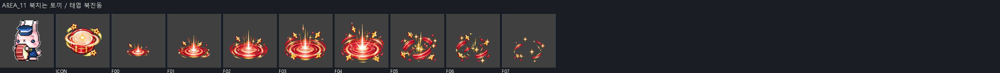
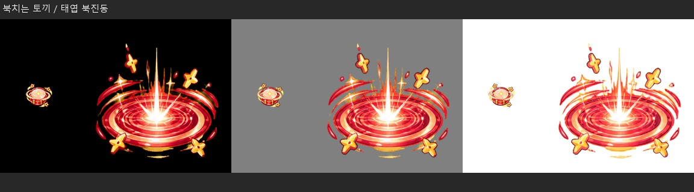

- 핵심 소재: 장난감 북면에서 퍼지는 둥근 진동륜과 태엽 별조각. ‘북치는 토끼 / 태엽 북진동’ 전용 소재이며 몬스터 본체는 VFX에 직접 넣지 않음
- 진행 방향: 장난감 북면에서 퍼지는 둥근 진동륜과 태엽 별조각이 중심에서 방사 또는 수직으로 확장하고 절정 뒤 파편은 원점으로 되감기지 않음
- 아이콘 핵심 모티브: 대표 실루엣 1개는 ‘북면’, 보조 효과 1개는 ‘동심 진동륜’. 64px 축소에서도 두 형상의 겹침과 방향이 읽혀야 함
- VFX: 8 frames, 각 384×384 RGBA PNG, 약 0.10 sec/frame
소울 레조넌스 / 소울 레조넌스 강화 · 타임 피스AREA_11 블록퍼스 / 블록 위장 — 유지 가능
몬스터/스킬의 선언 소재와 대표 형상이 연결되고, 명암층·주 실루엣·ICON의 형태 언어가 양립한다. 필수 원화 변경을 요구할 명확한 문제는 이번 정적 프레임 검토에서 찾지 못했다.
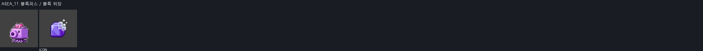
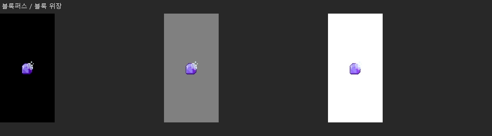
- 핵심 소재: 사각 블록 표면이 주변 색으로 바뀌며 흐려지는 위장막. ‘블록퍼스 / 블록 위장’ 전용 소재이며 몬스터 본체는 VFX에 직접 넣지 않음
- 진행 방향: 사각 블록 표면이 주변 색으로 바뀌며 흐려지는 위장막의 대표 결만 바깥으로 8~15% 맥동하고 이동 궤적은 만들지 않음
- 아이콘 핵심 모티브: 대표 실루엣 1개는 ‘사각 블록’, 보조 효과 1개는 ‘흐림 격자’. 64px 축소에서도 두 형상의 겹침과 방향이 읽혀야 함
- VFX: 6 frames, 각 256×256 RGBA PNG, 약 0.10 sec/frame
로얄 가드 VI · 워터실드AREA_11 킹 블록퍼스 / 왕관 블록탄 — 유지 가능
몬스터/스킬의 선언 소재와 대표 형상이 연결되고, 명암층·주 실루엣·ICON의 형태 언어가 양립한다. 필수 원화 변경을 요구할 명확한 문제는 이번 정적 프레임 검토에서 찾지 못했다.
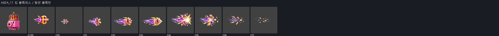
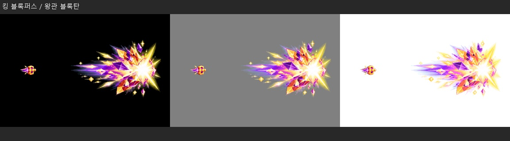

- 핵심 소재: 왕관 블록이 회전하며 각진 에너지 조각을 발사하는 탄. ‘킹 블록퍼스 / 왕관 블록탄’ 전용 소재이며 몬스터 본체는 VFX에 직접 넣지 않음
- 진행 방향: 왕관 블록이 회전하며 각진 에너지 조각을 발사하는 탄이 오른쪽 한 방향으로 이동하고 꼬리·잔상은 발사점 쪽에만 남김
- 아이콘 핵심 모티브: 대표 실루엣 1개는 ‘왕관 블록’, 보조 효과 1개는 ‘각진 탄 궤적’. 64px 축소에서도 두 형상의 겹침과 방향이 읽혀야 함
- VFX: 8 frames, 각 384×384 RGBA PNG, 약 0.10 sec/frame
버블 스타 / 버블 스타 강화 · 로얄 가드 VIAREA_11 롬바드 / 에오스 중력파 — 유지 가능
몬스터/스킬의 선언 소재와 대표 형상이 연결되고, 명암층·주 실루엣·ICON의 형태 언어가 양립한다. 필수 원화 변경을 요구할 명확한 문제는 이번 정적 프레임 검토에서 찾지 못했다.

- 핵심 소재: 에오스 톱니 코어가 공간을 아래로 휘게 하는 중력 고리. ‘롬바드 / 에오스 중력파’ 전용 소재이며 몬스터 본체는 VFX에 직접 넣지 않음
- 진행 방향: 에오스 톱니 코어가 공간을 아래로 휘게 하는 중력 고리의 고유 결을 따라 한 번 확장·수축하며 불필요한 화면 횡단은 하지 않음
- 아이콘 핵심 모티브: 대표 실루엣 1개는 ‘톱니 코어’, 보조 효과 1개는 ‘눌린 중력 고리’. 64px 축소에서도 두 형상의 겹침과 방향이 읽혀야 함
- VFX: 12 frames, 각 512×512 RGBA PNG, 약 0.08 sec/frame
타임 피스 · 옵시디언 배리어 / 옵시디언 배리어 강화AREA_12 브라운테니 / 솜인형 완충 — 유지 가능
몬스터/스킬의 선언 소재와 대표 형상이 연결되고, 명암층·주 실루엣·ICON의 형태 언어가 양립한다. 필수 원화 변경을 요구할 명확한 문제는 이번 정적 프레임 검토에서 찾지 못했다.
- 핵심 소재: 갈색 솜뭉치가 눌렸다 부푸는 쿠션형 완충막. ‘브라운테니 / 솜인형 완충’ 전용 소재이며 몬스터 본체는 VFX에 직접 넣지 않음
- 진행 방향: 갈색 솜뭉치가 눌렸다 부푸는 쿠션형 완충막의 대표 결만 바깥으로 8~15% 맥동하고 이동 궤적은 만들지 않음
- 아이콘 핵심 모티브: 대표 실루엣 1개는 ‘솜 쿠션’, 보조 효과 1개는 ‘눌림 곡선’. 64px 축소에서도 두 형상의 겹침과 방향이 읽혀야 함
- VFX: 6 frames, 각 256×256 RGBA PNG, 약 0.10 sec/frame
워터실드 · 로얄 가드 VIAREA_12 장난감 목마 / 태엽 목마 돌진 — 유지 가능
몬스터/스킬의 선언 소재와 대표 형상이 연결되고, 명암층·주 실루엣·ICON의 형태 언어가 양립한다. 필수 원화 변경을 요구할 명확한 문제는 이번 정적 프레임 검토에서 찾지 못했다.

- 핵심 소재: 목마 바퀴와 태엽이 전방으로 겹치는 장난감 돌진선. ‘장난감 목마 / 태엽 목마 돌진’ 전용 소재이며 몬스터 본체는 VFX에 직접 넣지 않음
- 진행 방향: 목마 바퀴와 태엽이 전방으로 겹치는 장난감 돌진선이 오른쪽으로 압축·가속하고 충돌점에서 짧게 넓어진 뒤 반대 방향 파편 없이 소멸
- 아이콘 핵심 모티브: 대표 실루엣 1개는 ‘목마 머리’, 보조 효과 1개는 ‘바퀴 속도선’. 64px 축소에서도 두 형상의 겹침과 방향이 읽혀야 함
- VFX: 8 frames, 각 384×384 RGBA PNG, 약 0.10 sec/frame
스크류 펀치 / 스크류 펀치 강화 · 로얄 가드 VIAREA_12 마스터 로보 / 정밀 태엽회로 — 유지 가능
몬스터/스킬의 선언 소재와 대표 형상이 연결되고, 명암층·주 실루엣·ICON의 형태 언어가 양립한다. 필수 원화 변경을 요구할 명확한 문제는 이번 정적 프레임 검토에서 찾지 못했다.
- 핵심 소재: 정밀 톱니 세 개와 회로선이 동심으로 맞물리는 코어. ‘마스터 로보 / 정밀 태엽회로’ 전용 소재이며 몬스터 본체는 VFX에 직접 넣지 않음
- 진행 방향: 정밀 톱니 세 개와 회로선이 동심으로 맞물리는 코어의 대표 결만 바깥으로 8~15% 맥동하고 이동 궤적은 만들지 않음
- 아이콘 핵심 모티브: 대표 실루엣 1개는 ‘세 톱니 코어’, 보조 효과 1개는 ‘회로선’. 64px 축소에서도 두 형상의 겹침과 방향이 읽혀야 함
- VFX: 6 frames, 각 256×256 RGBA PNG, 약 0.10 sec/frame
타임 피스 · 로얄 가드 VIAREA_12 크로노스 / 크로노스의 시간편린 — 유지 가능
몬스터/스킬의 선언 소재와 대표 형상이 연결되고, 명암층·주 실루엣·ICON의 형태 언어가 양립한다. 필수 원화 변경을 요구할 명확한 문제는 이번 정적 프레임 검토에서 찾지 못했다.

- 핵심 소재: 깨진 시계판 조각과 역회전하는 짧은 시간 궤도. ‘크로노스 / 크로노스의 시간편린’ 전용 소재이며 몬스터 본체는 VFX에 직접 넣지 않음
- 진행 방향: 깨진 시계판 조각과 역회전하는 짧은 시간 궤도의 고유 결을 따라 한 번 확장·수축하며 불필요한 화면 횡단은 하지 않음
- 아이콘 핵심 모티브: 대표 실루엣 1개는 ‘깨진 시계판’, 보조 효과 1개는 ‘역회전 궤도’. 64px 축소에서도 두 형상의 겹침과 방향이 읽혀야 함
- VFX: 8 frames, 각 384×384 RGBA PNG, 약 0.10 sec/frame
타임 피스 · 엔드리스 다크니스AREA_12 타이머 / 시간 정지 충격 — 권장
시간 고리와 시계바늘의 전개는 명세에 맞는다. F00 하단에 본체와 멀리 떨어진 작은 청록 잔점이 보인다. 주 형상과 분리된 매우 약한 잔류를 원본과 대조한 뒤 정리할 수 있다.

- 핵심 소재: 정지한 시곗바늘에서 각진 시간 충격륜이 터지는 순간. ‘타이머 / 시간 정지 충격’ 전용 소재이며 몬스터 본체는 VFX에 직접 넣지 않음
- 진행 방향: 정지한 시곗바늘에서 각진 시간 충격륜이 터지는 순간이 중심에서 방사 또는 수직으로 확장하고 절정 뒤 파편은 원점으로 되감기지 않음
- 아이콘 핵심 모티브: 대표 실루엣 1개는 ‘멈춘 시곗바늘’, 보조 효과 1개는 ‘시간 충격륜’. 64px 축소에서도 두 형상의 겹침과 방향이 읽혀야 함
- VFX: 12 frames, 각 512×512 RGBA PNG, 약 0.08 sec/frame
타임 피스 · 스크류 펀치 / 스크류 펀치 강화AREA_13 흰 모래토끼 / 사막 굴착탄 — 유지 가능
몬스터/스킬의 선언 소재와 대표 형상이 연결되고, 명암층·주 실루엣·ICON의 형태 언어가 양립한다. 필수 원화 변경을 요구할 명확한 문제는 이번 정적 프레임 검토에서 찾지 못했다.

- 핵심 소재: 모래를 파고 솟는 원뿔형 굴착탄과 작은 모래알. ‘흰 모래토끼 / 사막 굴착탄’ 전용 소재이며 몬스터 본체는 VFX에 직접 넣지 않음
- 진행 방향: 모래를 파고 솟는 원뿔형 굴착탄과 작은 모래알이 오른쪽 한 방향으로 이동하고 꼬리·잔상은 발사점 쪽에만 남김
- 아이콘 핵심 모티브: 대표 실루엣 1개는 ‘모래 원뿔탄’, 보조 효과 1개는 ‘굴착 궤적’. 64px 축소에서도 두 형상의 겹침과 방향이 읽혀야 함
- VFX: 8 frames, 각 384×384 RGBA PNG, 약 0.10 sec/frame
헥스 : 샌드스톰 · 버블 스타 / 버블 스타 강화AREA_13 목도리 프릴드 / 목도리의 사막감각 — 유지 가능
몬스터/스킬의 선언 소재와 대표 형상이 연결되고, 명암층·주 실루엣·ICON의 형태 언어가 양립한다. 필수 원화 변경을 요구할 명확한 문제는 이번 정적 프레임 검토에서 찾지 못했다.
- 핵심 소재: 목도리 끝이 바람결을 읽듯 휘는 얇은 사막 감지선. ‘목도리 프릴드 / 목도리의 사막감각’ 전용 소재이며 몬스터 본체는 VFX에 직접 넣지 않음
- 진행 방향: 목도리 끝이 바람결을 읽듯 휘는 얇은 사막 감지선의 대표 결만 바깥으로 8~15% 맥동하고 이동 궤적은 만들지 않음
- 아이콘 핵심 모티브: 대표 실루엣 1개는 ‘휘날린 목도리’, 보조 효과 1개는 ‘바람 감지선’. 64px 축소에서도 두 형상의 겹침과 방향이 읽혀야 함
- VFX: 6 frames, 각 256×256 RGBA PNG, 약 0.10 sec/frame
하울링 게일 / 하울링 게일 강화 · 헥스 : 샌드스톰AREA_13 미요캐츠 / 미요캐츠의 모래매복 — 유지 가능
몬스터/스킬의 선언 소재와 대표 형상이 연결되고, 명암층·주 실루엣·ICON의 형태 언어가 양립한다. 필수 원화 변경을 요구할 명확한 문제는 이번 정적 프레임 검토에서 찾지 못했다.

- 핵심 소재: 모래언덕 아래 숨었다 솟는 두 갈래 매복 흔적. ‘미요캐츠 / 미요캐츠의 모래매복’ 전용 소재이며 몬스터 본체는 VFX에 직접 넣지 않음
- 진행 방향: 모래언덕 아래 숨었다 솟는 두 갈래 매복 흔적의 고유 결을 따라 한 번 확장·수축하며 불필요한 화면 횡단은 하지 않음
- 아이콘 핵심 모티브: 대표 실루엣 1개는 ‘솟는 모래봉’, 보조 효과 1개는 ‘숨은 눈빛’. 64px 축소에서도 두 형상의 겹침과 방향이 읽혀야 함
- VFX: 8 frames, 각 384×384 RGBA PNG, 약 0.10 sec/frame
토파류 : 지 VI · 헥스 : 샌드스톰AREA_13 모래난쟁이 / 사막 대장장이의 체력 — 유지 가능
몬스터/스킬의 선언 소재와 대표 형상이 연결되고, 명암층·주 실루엣·ICON의 형태 언어가 양립한다. 필수 원화 변경을 요구할 명확한 문제는 이번 정적 프레임 검토에서 찾지 못했다.
- 핵심 소재: 대장장이 망치 문양과 단단히 맺힌 붉은 체력 불씨. ‘모래난쟁이 / 사막 대장장이의 체력’ 전용 소재이며 몬스터 본체는 VFX에 직접 넣지 않음
- 진행 방향: 대장장이 망치 문양과 단단히 맺힌 붉은 체력 불씨의 대표 결만 바깥으로 8~15% 맥동하고 이동 궤적은 만들지 않음
- 아이콘 핵심 모티브: 대표 실루엣 1개는 ‘망치 문양’, 보조 효과 1개는 ‘붉은 체력핵’. 64px 축소에서도 두 형상의 겹침과 방향이 읽혀야 함
- VFX: 6 frames, 각 256×256 RGBA PNG, 약 0.10 sec/frame
로얄 가드 VI · 정기 뿌리기 / 정기 뿌리기 강화AREA_13 데우 / 잠든 선인장의 폭발 — 유지 가능
몬스터/스킬의 선언 소재와 대표 형상이 연결되고, 명암층·주 실루엣·ICON의 형태 언어가 양립한다. 필수 원화 변경을 요구할 명확한 문제는 이번 정적 프레임 검토에서 찾지 못했다.

- 핵심 소재: 선인장 가시가 원형으로 벌어지며 모래와 함께 폭발. ‘데우 / 잠든 선인장의 폭발’ 전용 소재이며 몬스터 본체는 VFX에 직접 넣지 않음
- 진행 방향: 선인장 가시가 원형으로 벌어지며 모래와 함께 폭발이 중심에서 방사 또는 수직으로 확장하고 절정 뒤 파편은 원점으로 되감기지 않음
- 아이콘 핵심 모티브: 대표 실루엣 1개는 ‘선인장 가시핵’, 보조 효과 1개는 ‘모래 폭발’. 64px 축소에서도 두 형상의 겹침과 방향이 읽혀야 함
- VFX: 12 frames, 각 512×512 RGBA PNG, 약 0.08 sec/frame
헥스 : 샌드스톰 · [처형] 포이즌 니들AREA_14 큐브슬라임 / 연금 큐브막 — 유지 가능
몬스터/스킬의 선언 소재와 대표 형상이 연결되고, 명암층·주 실루엣·ICON의 형태 언어가 양립한다. 필수 원화 변경을 요구할 명확한 문제는 이번 정적 프레임 검토에서 찾지 못했다.
- 핵심 소재: 투명 연금 큐브가 점액처럼 휘며 겹치는 사각 보호막. ‘큐브슬라임 / 연금 큐브막’ 전용 소재이며 몬스터 본체는 VFX에 직접 넣지 않음
- 진행 방향: 투명 연금 큐브가 점액처럼 휘며 겹치는 사각 보호막의 대표 결만 바깥으로 8~15% 맥동하고 이동 궤적은 만들지 않음
- 아이콘 핵심 모티브: 대표 실루엣 1개는 ‘투명 큐브’, 보조 효과 1개는 ‘점액 모서리’. 64px 축소에서도 두 형상의 겹침과 방향이 읽혀야 함
- VFX: 6 frames, 각 256×256 RGBA PNG, 약 0.10 sec/frame
워터실드 · 로얄 가드 VIAREA_14 미스릴 뮤테 / 미스릴 외피 — 유지 가능
몬스터/스킬의 선언 소재와 대표 형상이 연결되고, 명암층·주 실루엣·ICON의 형태 언어가 양립한다. 필수 원화 변경을 요구할 명확한 문제는 이번 정적 프레임 검토에서 찾지 못했다.
- 핵심 소재: 미스릴 판이 육각으로 포개지고 표면에 차가운 반사광. ‘미스릴 뮤테 / 미스릴 외피’ 전용 소재이며 몬스터 본체는 VFX에 직접 넣지 않음
- 진행 방향: 미스릴 판이 육각으로 포개지고 표면에 차가운 반사광의 대표 결만 바깥으로 8~15% 맥동하고 이동 궤적은 만들지 않음
- 아이콘 핵심 모티브: 대표 실루엣 1개는 ‘육각 미스릴판’, 보조 효과 1개는 ‘냉광’. 64px 축소에서도 두 형상의 겹침과 방향이 읽혀야 함
- VFX: 6 frames, 각 256×256 RGBA PNG, 약 0.10 sec/frame
로얄 가드 VI · 블리자드 VIAREA_14 호문 / 플라스크 독무 — 유지 가능
몬스터/스킬의 선언 소재와 대표 형상이 연결되고, 명암층·주 실루엣·ICON의 형태 언어가 양립한다. 필수 원화 변경을 요구할 명확한 문제는 이번 정적 프레임 검토에서 찾지 못했다.

- 핵심 소재: 금 간 플라스크에서 새는 자주빛 독무와 액체 방울. ‘호문 / 플라스크 독무’ 전용 소재이며 몬스터 본체는 VFX에 직접 넣지 않음
- 진행 방향: 금 간 플라스크에서 새는 자주빛 독무와 액체 방울이 중심에서 방사 또는 수직으로 확장하고 절정 뒤 파편은 원점으로 되감기지 않음
- 아이콘 핵심 모티브: 대표 실루엣 1개는 ‘금 간 플라스크’, 보조 효과 1개는 ‘독무’. 64px 축소에서도 두 형상의 겹침과 방향이 읽혀야 함
- VFX: 8 frames, 각 384×384 RGBA PNG, 약 0.10 sec/frame
포이즌 미스트 · 분출 : 너울이는 강 VIAREA_14 로이드 / 알카드노 에너지탄 — 유지 가능
몬스터/스킬의 선언 소재와 대표 형상이 연결되고, 명암층·주 실루엣·ICON의 형태 언어가 양립한다. 필수 원화 변경을 요구할 명확한 문제는 이번 정적 프레임 검토에서 찾지 못했다.

- 핵심 소재: 알카드노 금속 코어가 압축한 직선 에너지탄. ‘로이드 / 알카드노 에너지탄’ 전용 소재이며 몬스터 본체는 VFX에 직접 넣지 않음
- 진행 방향: 알카드노 금속 코어가 압축한 직선 에너지탄이 오른쪽 한 방향으로 이동하고 꼬리·잔상은 발사점 쪽에만 남김
- 아이콘 핵심 모티브: 대표 실루엣 1개는 ‘금속 코어’, 보조 효과 1개는 ‘직선 에너지탄’. 64px 축소에서도 두 형상의 겹침과 방향이 읽혀야 함
- VFX: 8 frames, 각 384×384 RGBA PNG, 약 0.10 sec/frame
버블 스타 / 버블 스타 강화 · 브레스 오브 어스AREA_14 키메라 / 융합체의 산성 포격 — 유지 가능
몬스터/스킬의 선언 소재와 대표 형상이 연결되고, 명암층·주 실루엣·ICON의 형태 언어가 양립한다. 필수 원화 변경을 요구할 명확한 문제는 이번 정적 프레임 검토에서 찾지 못했다.

- 핵심 소재: 서로 다른 산성액 두 줄기가 합쳐져 터지는 포격탄. ‘키메라 / 융합체의 산성 포격’ 전용 소재이며 몬스터 본체는 VFX에 직접 넣지 않음
- 진행 방향: 서로 다른 산성액 두 줄기가 합쳐져 터지는 포격탄이 오른쪽 한 방향으로 이동하고 꼬리·잔상은 발사점 쪽에만 남김
- 아이콘 핵심 모티브: 대표 실루엣 1개는 ‘쌍 산성관’, 보조 효과 1개는 ‘포격 폭발’. 64px 축소에서도 두 형상의 겹침과 방향이 읽혀야 함
- VFX: 12 frames, 각 512×512 RGBA PNG, 약 0.08 sec/frame
분출 : 너울이는 강 VI · 포이즌 미스트AREA_15 수련용 짚인형 / 짚단 균형감각 — 유지 가능
몬스터/스킬의 선언 소재와 대표 형상이 연결되고, 명암층·주 실루엣·ICON의 형태 언어가 양립한다. 필수 원화 변경을 요구할 명확한 문제는 이번 정적 프레임 검토에서 찾지 못했다.
- 핵심 소재: 짚 매듭이 흔들려도 중심을 되찾는 균형 고리. ‘수련용 짚인형 / 짚단 균형감각’ 전용 소재이며 몬스터 본체는 VFX에 직접 넣지 않음
- 진행 방향: 짚 매듭이 흔들려도 중심을 되찾는 균형 고리의 대표 결만 바깥으로 8~15% 맥동하고 이동 궤적은 만들지 않음
- 아이콘 핵심 모티브: 대표 실루엣 1개는 ‘짚 매듭’, 보조 효과 1개는 ‘균형 수평선’. 64px 축소에서도 두 형상의 겹침과 방향이 읽혀야 함
- VFX: 6 frames, 각 256×256 RGBA PNG, 약 0.10 sec/frame
정기 뿌리기 / 정기 뿌리기 강화 · 로얄 가드 VIAREA_15 수련용 나무인형 / 목인 회전타 — 권장
목재 회전 궤적은 적합하다. 마지막 프레임에도 목재 핵이 또렷하게 남아 one-shot 종료 때 갑자기 사라질 가능성이 있다. 실제 이름/ID는 기록의 값을 우선하며 마지막 alpha 감소를 검토한다.

- 핵심 소재: 나무 팔축이 원형으로 휘두르는 회전 궤적과 톱밥. ‘수련용 나무인형 / 목인 회전타’ 전용 소재이며 몬스터 본체는 VFX에 직접 넣지 않음
- 진행 방향: 나무 팔축이 원형으로 휘두르는 회전 궤적과 톱밥이 오른쪽으로 압축·가속하고 충돌점에서 짧게 넓어진 뒤 반대 방향 파편 없이 소멸
- 아이콘 핵심 모티브: 대표 실루엣 1개는 ‘나무 팔축’, 보조 효과 1개는 ‘원형 타격선’. 64px 축소에서도 두 형상의 겹침과 방향이 읽혀야 함
- VFX: 8 frames, 각 384×384 RGBA PNG, 약 0.10 sec/frame
스크류 펀치 / 스크류 펀치 강화 · [처형] 포이즌 니들AREA_15 원공 / 천도 투척 — 유지 가능
몬스터/스킬의 선언 소재와 대표 형상이 연결되고, 명암층·주 실루엣·ICON의 형태 언어가 양립한다. 필수 원화 변경을 요구할 명확한 문제는 이번 정적 프레임 검토에서 찾지 못했다.

- 핵심 소재: 천도 복숭아가 잎사귀 꼬리를 달고 포물선으로 날아가는 탄. ‘원공 / 천도 투척’ 전용 소재이며 몬스터 본체는 VFX에 직접 넣지 않음
- 진행 방향: 천도 복숭아가 잎사귀 꼬리를 달고 포물선으로 날아가는 탄이 오른쪽 한 방향으로 이동하고 꼬리·잔상은 발사점 쪽에만 남김
- 아이콘 핵심 모티브: 대표 실루엣 1개는 ‘복숭아’, 보조 효과 1개는 ‘잎사귀 포물선’. 64px 축소에서도 두 형상의 겹침과 방향이 읽혀야 함
- VFX: 8 frames, 각 384×384 RGBA PNG, 약 0.10 sec/frame
버블 스타 / 버블 스타 강화 · 정기 뿌리기 / 정기 뿌리기 강화AREA_15 청화사 / 청화 비늘 — 유지 가능
몬스터/스킬의 선언 소재와 대표 형상이 연결되고, 명암층·주 실루엣·ICON의 형태 언어가 양립한다. 필수 원화 변경을 요구할 명확한 문제는 이번 정적 프레임 검토에서 찾지 못했다.
- 핵심 소재: 푸른 꽃잎 비늘이 뱀의 S자 곡선으로 포개지는 방호결. ‘청화사 / 청화 비늘’ 전용 소재이며 몬스터 본체는 VFX에 직접 넣지 않음
- 진행 방향: 푸른 꽃잎 비늘이 뱀의 S자 곡선으로 포개지는 방호결의 대표 결만 바깥으로 8~15% 맥동하고 이동 궤적은 만들지 않음
- 아이콘 핵심 모티브: 대표 실루엣 1개는 ‘S자 꽃비늘’, 보조 효과 1개는 ‘푸른 꽃잎’. 64px 축소에서도 두 형상의 겹침과 방향이 읽혀야 함
- VFX: 6 frames, 각 256×256 RGBA PNG, 약 0.10 sec/frame
로얄 가드 VI · 미스트랄 스프링AREA_15 태륜 / 태륜의 쌍권풍 — 유지 가능
몬스터/스킬의 선언 소재와 대표 형상이 연결되고, 명암층·주 실루엣·ICON의 형태 언어가 양립한다. 필수 원화 변경을 요구할 명확한 문제는 이번 정적 프레임 검토에서 찾지 못했다.

- 핵심 소재: 두 권격이 마주 회전해 만드는 쌍둥이 바람 소용돌이. ‘태륜 / 태륜의 쌍권풍’ 전용 소재이며 몬스터 본체는 VFX에 직접 넣지 않음
- 진행 방향: 두 권격이 마주 회전해 만드는 쌍둥이 바람 소용돌이의 고유 결을 따라 한 번 확장·수축하며 불필요한 화면 횡단은 하지 않음
- 아이콘 핵심 모티브: 대표 실루엣 1개는 ‘쌍 주먹 바람눈’, 보조 효과 1개는 ‘회전선’. 64px 축소에서도 두 형상의 겹침과 방향이 읽혀야 함
- VFX: 12 frames, 각 512×512 RGBA PNG, 약 0.08 sec/frame
스크류 펀치 / 스크류 펀치 강화 · 하울링 게일 / 하울링 게일 강화AREA_16 하프 / 하늘 둥지의 날갯결 — 유지 가능
몬스터/스킬의 선언 소재와 대표 형상이 연결되고, 명암층·주 실루엣·ICON의 형태 언어가 양립한다. 필수 원화 변경을 요구할 명확한 문제는 이번 정적 프레임 검토에서 찾지 못했다.
- 핵심 소재: 하프 깃털이 부드러운 공기결을 타고 펼쳐지는 날개 잔상. ‘하프 / 하늘 둥지의 날갯결’ 전용 소재이며 몬스터 본체는 VFX에 직접 넣지 않음
- 진행 방향: 하프 깃털이 부드러운 공기결을 타고 펼쳐지는 날개 잔상의 대표 결만 바깥으로 8~15% 맥동하고 이동 궤적은 만들지 않음
- 아이콘 핵심 모티브: 대표 실루엣 1개는 ‘큰 깃털’, 보조 효과 1개는 ‘바람결’. 64px 축소에서도 두 형상의 겹침과 방향이 읽혀야 함
- VFX: 6 frames, 각 256×256 RGBA PNG, 약 0.10 sec/frame
하울링 게일 / 하울링 게일 강화 · 소울 시커 VIAREA_16 블러드 하프 / 핏빛 깃울림 — 권장
깃털·음파의 색과 재질은 적합하다. F01의 세운 깃털이 F02에서는 빠지고 F03에서 다시 나타난다. 같은 깃털의 진동/회전으로 읽히도록 중간 형상 연결을 다듬는 것을 권장한다.

- 핵심 소재: 핏빛 깃털이 음파 고리와 함께 떨리는 날카로운 울림. ‘블러드 하프 / 핏빛 깃울림’ 전용 소재이며 몬스터 본체는 VFX에 직접 넣지 않음
- 진행 방향: 핏빛 깃털이 음파 고리와 함께 떨리는 날카로운 울림의 고유 결을 따라 한 번 확장·수축하며 불필요한 화면 횡단은 하지 않음
- 아이콘 핵심 모티브: 대표 실루엣 1개는 ‘핏빛 깃털’, 보조 효과 1개는 ‘음파 고리’. 64px 축소에서도 두 형상의 겹침과 방향이 읽혀야 함
- VFX: 8 frames, 각 384×384 RGBA PNG, 약 0.10 sec/frame
소울 레조넌스 / 소울 레조넌스 강화 · 소울 시커 VIAREA_16 블루 와이번 / 빙룡 숨결 — 보정 필요
F02~F04가 오른쪽 용머리/원형 문에서 왼쪽으로 뿜는 구도다. INPUT의 오른쪽 발사와 충돌한다. 공식 프리징 브레스의 용머리·원형 문 구성까지 매우 가깝게 따라가 마감 참조를 넘어선다. 용머리 표현을 제거하고 쐐기 얼음과 오른쪽 숨결이라는 고유 소재로 다시 구성할 필요가 있다. 바이트 복제 여부는 이 판단에 포함하지 않는다.

- 핵심 소재: 용의 입김처럼 길게 뻗는 빙결 숨결과 쐐기 얼음. ‘블루 와이번 / 빙룡 숨결’ 전용 소재이며 몬스터 본체는 VFX에 직접 넣지 않음
- 진행 방향: 용의 입김처럼 길게 뻗는 빙결 숨결과 쐐기 얼음이 오른쪽 한 방향으로 이동하고 꼬리·잔상은 발사점 쪽에만 남김
- 아이콘 핵심 모티브: 대표 실루엣 1개는 ‘빙룡 숨결’, 보조 효과 1개는 ‘얼음 쐐기’. 64px 축소에서도 두 형상의 겹침과 방향이 읽혀야 함
- VFX: 8 frames, 각 384×384 RGBA PNG, 약 0.10 sec/frame
프리징 브레스 · 블리자드 VIAREA_16 다크 와이번 / 검은 비늘의 근력 — 유지 가능
몬스터/스킬의 선언 소재와 대표 형상이 연결되고, 명암층·주 실루엣·ICON의 형태 언어가 양립한다. 필수 원화 변경을 요구할 명확한 문제는 이번 정적 프레임 검토에서 찾지 못했다.
- 핵심 소재: 검은 비늘판 사이에서 붉은 근력맥이 점등되는 강화. ‘다크 와이번 / 검은 비늘의 근력’ 전용 소재이며 몬스터 본체는 VFX에 직접 넣지 않음
- 진행 방향: 검은 비늘판 사이에서 붉은 근력맥이 점등되는 강화의 대표 결만 바깥으로 8~15% 맥동하고 이동 궤적은 만들지 않음
- 아이콘 핵심 모티브: 대표 실루엣 1개는 ‘검은 비늘’, 보조 효과 1개는 ‘붉은 힘맥’. 64px 축소에서도 두 형상의 겹침과 방향이 읽혀야 함
- VFX: 6 frames, 각 256×256 RGBA PNG, 약 0.10 sec/frame
로얄 가드 VI · 옵시디언 배리어 / 옵시디언 배리어 강화AREA_16 마뇽 / 마뇽의 용화염 — 유지 가능
몬스터/스킬의 선언 소재와 대표 형상이 연결되고, 명암층·주 실루엣·ICON의 형태 언어가 양립한다. 필수 원화 변경을 요구할 명확한 문제는 이번 정적 프레임 검토에서 찾지 못했다.

- 핵심 소재: 거대한 용뿔형 불꽃이 겹쳐지는 고열 용화염. ‘마뇽 / 마뇽의 용화염’ 전용 소재이며 몬스터 본체는 VFX에 직접 넣지 않음
- 진행 방향: 거대한 용뿔형 불꽃이 겹쳐지는 고열 용화염의 고유 결을 따라 한 번 확장·수축하며 불필요한 화면 횡단은 하지 않음
- 아이콘 핵심 모티브: 대표 실루엣 1개는 ‘용뿔 화염’, 보조 효과 1개는 ‘황금 용핵’. 64px 축소에서도 두 형상의 겹침과 방향이 읽혀야 함
- VFX: 12 frames, 각 512×512 RGBA PNG, 약 0.08 sec/frame
오비탈 플레임 VI · 인퍼널 브레스AREA_17 추억의 사제 / 추억의 묵상 — 유지 가능
몬스터/스킬의 선언 소재와 대표 형상이 연결되고, 명암층·주 실루엣·ICON의 형태 언어가 양립한다. 필수 원화 변경을 요구할 명확한 문제는 이번 정적 프레임 검토에서 찾지 못했다.
- 핵심 소재: 빛바랜 기억 조각이 염주처럼 천천히 도는 묵상륜. ‘추억의 사제 / 추억의 묵상’ 전용 소재이며 몬스터 본체는 VFX에 직접 넣지 않음
- 진행 방향: 빛바랜 기억 조각이 염주처럼 천천히 도는 묵상륜의 대표 결만 바깥으로 8~15% 맥동하고 이동 궤적은 만들지 않음
- 아이콘 핵심 모티브: 대표 실루엣 1개는 ‘기억 염주’, 보조 효과 1개는 ‘잔잔한 묵상륜’. 64px 축소에서도 두 형상의 겹침과 방향이 읽혀야 함
- VFX: 6 frames, 각 256×256 RGBA PNG, 약 0.10 sec/frame
타임 피스 · 정기 뿌리기 / 정기 뿌리기 강화AREA_17 추억의 신관 / 추억의 기도파 — 유지 가능
몬스터/스킬의 선언 소재와 대표 형상이 연결되고, 명암층·주 실루엣·ICON의 형태 언어가 양립한다. 필수 원화 변경을 요구할 명확한 문제는 이번 정적 프레임 검토에서 찾지 못했다.

- 핵심 소재: 작은 기도 구슬이 모여 앞으로 번지는 파동. ‘추억의 신관 / 추억의 기도파’ 전용 소재이며 몬스터 본체는 VFX에 직접 넣지 않음
- 진행 방향: 작은 기도 구슬이 모여 앞으로 번지는 파동의 고유 결을 따라 한 번 확장·수축하며 불필요한 화면 횡단은 하지 않음
- 아이콘 핵심 모티브: 대표 실루엣 1개는 ‘기도 구슬’, 보조 효과 1개는 ‘전방 잔파’. 64px 축소에서도 두 형상의 겹침과 방향이 읽혀야 함
- VFX: 8 frames, 각 384×384 RGBA PNG, 약 0.10 sec/frame
소울 시커 VI · 정기 뿌리기 / 정기 뿌리기 강화AREA_17 추억의 수호병 / 수호병의 기억갑주 — 유지 가능
몬스터/스킬의 선언 소재와 대표 형상이 연결되고, 명암층·주 실루엣·ICON의 형태 언어가 양립한다. 필수 원화 변경을 요구할 명확한 문제는 이번 정적 프레임 검토에서 찾지 못했다.
- 핵심 소재: 기억 석판 조각이 방패처럼 겹치는 갑주. ‘추억의 수호병 / 수호병의 기억갑주’ 전용 소재이며 몬스터 본체는 VFX에 직접 넣지 않음
- 진행 방향: 기억 석판 조각이 방패처럼 겹치는 갑주의 대표 결만 바깥으로 8~15% 맥동하고 이동 궤적은 만들지 않음
- 아이콘 핵심 모티브: 대표 실루엣 1개는 ‘기억 석판 방패’, 보조 효과 1개는 ‘봉인광’. 64px 축소에서도 두 형상의 겹침과 방향이 읽혀야 함
- VFX: 6 frames, 각 256×256 RGBA PNG, 약 0.10 sec/frame
로얄 가드 VI · 토파류 : 지 VIAREA_17 추억의 수호대장 / 시간 수호진 — 유지 가능
몬스터/스킬의 선언 소재와 대표 형상이 연결되고, 명암층·주 실루엣·ICON의 형태 언어가 양립한다. 필수 원화 변경을 요구할 명확한 문제는 이번 정적 프레임 검토에서 찾지 못했다.

- 핵심 소재: 네 방향 석판이 맞물려 완성되는 시간 수호진. ‘추억의 수호대장 / 시간 수호진’ 전용 소재이며 몬스터 본체는 VFX에 직접 넣지 않음
- 진행 방향: 네 방향 석판이 맞물려 완성되는 시간 수호진이 중심에서 방사 또는 수직으로 확장하고 절정 뒤 파편은 원점으로 되감기지 않음
- 아이콘 핵심 모티브: 대표 실루엣 1개는 ‘십자 석판진’, 보조 효과 1개는 ‘시계 고리’. 64px 축소에서도 두 형상의 겹침과 방향이 읽혀야 함
- VFX: 8 frames, 각 384×384 RGBA PNG, 약 0.10 sec/frame
로얄 가드 VI · 타임 피스AREA_17 도도 / 기억 포식 — 유지 가능
몬스터/스킬의 선언 소재와 대표 형상이 연결되고, 명암층·주 실루엣·ICON의 형태 언어가 양립한다. 필수 원화 변경을 요구할 명확한 문제는 이번 정적 프레임 검토에서 찾지 못했다.

- 핵심 소재: 빛바랜 기억 조각을 안쪽으로 빨아들이는 검은 포식구. ‘도도 / 기억 포식’ 전용 소재이며 몬스터 본체는 VFX에 직접 넣지 않음
- 진행 방향: 빛바랜 기억 조각을 안쪽으로 빨아들이는 검은 포식구이 중심에서 방사 또는 수직으로 확장하고 절정 뒤 파편은 원점으로 되감기지 않음
- 아이콘 핵심 모티브: 대표 실루엣 1개는 ‘검은 포식구’, 보조 효과 1개는 ‘빨려드는 기억편’. 64px 축소에서도 두 형상의 겹침과 방향이 읽혀야 함
- VFX: 12 frames, 각 512×512 RGBA PNG, 약 0.08 sec/frame
엔드리스 다크니스 · 타임 피스AREA_18 마티안 / 마티안 광선탄 — 유지 가능
몬스터/스킬의 선언 소재와 대표 형상이 연결되고, 명암층·주 실루엣·ICON의 형태 언어가 양립한다. 필수 원화 변경을 요구할 명확한 문제는 이번 정적 프레임 검토에서 찾지 못했다.

- 핵심 소재: 외계 수정핵에서 발사되는 둥근 황록 광선탄. ‘마티안 / 마티안 광선탄’ 전용 소재이며 몬스터 본체는 VFX에 직접 넣지 않음
- 진행 방향: 외계 수정핵에서 발사되는 둥근 황록 광선탄이 오른쪽 한 방향으로 이동하고 꼬리·잔상은 발사점 쪽에만 남김
- 아이콘 핵심 모티브: 대표 실루엣 1개는 ‘외계 수정핵’, 보조 효과 1개는 ‘광선 꼬리’. 64px 축소에서도 두 형상의 겹침과 방향이 읽혀야 함
- VFX: 8 frames, 각 384×384 RGBA PNG, 약 0.10 sec/frame
버블 스타 / 버블 스타 강화 · 체인 라이트닝 VIAREA_18 플라티안 / 외계 장갑 조종 — 유지 가능
몬스터/스킬의 선언 소재와 대표 형상이 연결되고, 명암층·주 실루엣·ICON의 형태 언어가 양립한다. 필수 원화 변경을 요구할 명확한 문제는 이번 정적 프레임 검토에서 찾지 못했다.
- 핵심 소재: 겹친 외계 장갑판과 조종 회로가 켜지는 방호 구조. ‘플라티안 / 외계 장갑 조종’ 전용 소재이며 몬스터 본체는 VFX에 직접 넣지 않음
- 진행 방향: 겹친 외계 장갑판과 조종 회로가 켜지는 방호 구조의 대표 결만 바깥으로 8~15% 맥동하고 이동 궤적은 만들지 않음
- 아이콘 핵심 모티브: 대표 실루엣 1개는 ‘외계 장갑판’, 보조 효과 1개는 ‘회로 점등’. 64px 축소에서도 두 형상의 겹침과 방향이 읽혀야 함
- VFX: 6 frames, 각 256×256 RGBA PNG, 약 0.10 sec/frame
로얄 가드 VI · 타임 피스AREA_18 메카티안 / 기계화 레이저 — 보정 필요
F03의 빔 끝, F04~F05의 오른쪽 타격광·파편이 동일한 수직선에서 끊겨 보인다. 투명 여백을 남긴 채 내부에서 잘린 형태이므로 edge=0만으로 해결됐다고 볼 수 없다. 렌즈·분홍 팔레트는 보존하고 끝/타격광 복구가 필요하다.

- 핵심 소재: 기계 렌즈가 수평으로 조준해 뻗는 분홍 레이저. ‘메카티안 / 기계화 레이저’ 전용 소재이며 몬스터 본체는 VFX에 직접 넣지 않음
- 진행 방향: 기계 렌즈가 수평으로 조준해 뻗는 분홍 레이저이 오른쪽 한 방향으로 이동하고 꼬리·잔상은 발사점 쪽에만 남김
- 아이콘 핵심 모티브: 대표 실루엣 1개는 ‘기계 렌즈’, 보조 효과 1개는 ‘수평 레이저’. 64px 축소에서도 두 형상의 겹침과 방향이 읽혀야 함
- VFX: 8 frames, 각 384×384 RGBA PNG, 약 0.10 sec/frame
브레스 오브 어스 · 체인 라이트닝 VIAREA_18 원로 그레이 / 원로의 정신연산 — 유지 가능
몬스터/스킬의 선언 소재와 대표 형상이 연결되고, 명암층·주 실루엣·ICON의 형태 언어가 양립한다. 필수 원화 변경을 요구할 명확한 문제는 이번 정적 프레임 검토에서 찾지 못했다.
- 핵심 소재: 큰 뇌파 구체와 작은 연산 노드가 규칙적으로 연결되는 정신망. ‘원로 그레이 / 원로의 정신연산’ 전용 소재이며 몬스터 본체는 VFX에 직접 넣지 않음
- 진행 방향: 큰 뇌파 구체와 작은 연산 노드가 규칙적으로 연결되는 정신망의 대표 결만 바깥으로 8~15% 맥동하고 이동 궤적은 만들지 않음
- 아이콘 핵심 모티브: 대표 실루엣 1개는 ‘뇌파 구체’, 보조 효과 1개는 ‘연결 노드’. 64px 축소에서도 두 형상의 겹침과 방향이 읽혀야 함
- VFX: 6 frames, 각 256×256 RGBA PNG, 약 0.10 sec/frame
버블 스타 / 버블 스타 강화 · 타임 피스AREA_18 제노 / 제노의 중력장 — 권장
중력륜과 외계 코어는 식별된다. F05의 수평 타원륜에서 F06의 정면 나선으로 기울기가 크게 바뀐다. 원근 전환 중간 형상을 다듬어 고정 기준축의 연속성을 높이는 것을 권장한다.

- 핵심 소재: 외계 코어 주위 공간이 오목하게 접히는 다중 중력륜. ‘제노 / 제노의 중력장’ 전용 소재이며 몬스터 본체는 VFX에 직접 넣지 않음
- 진행 방향: 외계 코어 주위 공간이 오목하게 접히는 다중 중력륜의 고유 결을 따라 한 번 확장·수축하며 불필요한 화면 횡단은 하지 않음
- 아이콘 핵심 모티브: 대표 실루엣 1개는 ‘외계 코어’, 보조 효과 1개는 ‘오목한 중력륜’. 64px 축소에서도 두 형상의 겹침과 방향이 읽혀야 함
- VFX: 12 frames, 각 512×512 RGBA PNG, 약 0.08 sec/frame
옵시디언 배리어 / 옵시디언 배리어 강화 · 타임 피스AREA_19 정식기사 C / 기사단 뇌전 연각 — 유지 가능
몬스터/스킬의 선언 소재와 대표 형상이 연결되고, 명암층·주 실루엣·ICON의 형태 언어가 양립한다. 필수 원화 변경을 요구할 명확한 문제는 이번 정적 프레임 검토에서 찾지 못했다.

- 핵심 소재: 번개가 감긴 두 번의 연속 발차기 궤적. ‘정식기사 C / 기사단 뇌전 연각’ 전용 소재이며 몬스터 본체는 VFX에 직접 넣지 않음
- 진행 방향: 번개가 감긴 두 번의 연속 발차기 궤적이 오른쪽으로 압축·가속하고 충돌점에서 짧게 넓어진 뒤 반대 방향 파편 없이 소멸
- 아이콘 핵심 모티브: 대표 실루엣 1개는 ‘쌍 발차기 호’, 보조 효과 1개는 ‘번개 갈래’. 64px 축소에서도 두 형상의 겹침과 방향이 읽혀야 함
- VFX: 8 frames, 각 384×384 RGBA PNG, 약 0.10 sec/frame
체인 라이트닝 VI · 스크류 펀치 / 스크류 펀치 강화AREA_19 정식기사 D / 기사단의 바람 조준 — 유지 가능
몬스터/스킬의 선언 소재와 대표 형상이 연결되고, 명암층·주 실루엣·ICON의 형태 언어가 양립한다. 필수 원화 변경을 요구할 명확한 문제는 이번 정적 프레임 검토에서 찾지 못했다.
- 핵심 소재: 바람 깃이 한 점으로 모이는 조준선과 화살표형 압축광. ‘정식기사 D / 기사단의 바람 조준’ 전용 소재이며 몬스터 본체는 VFX에 직접 넣지 않음
- 진행 방향: 바람 깃이 한 점으로 모이는 조준선과 화살표형 압축광의 대표 결만 바깥으로 8~15% 맥동하고 이동 궤적은 만들지 않음
- 아이콘 핵심 모티브: 대표 실루엣 1개는 ‘바람 깃’, 보조 효과 1개는 ‘조준 십자’. 64px 축소에서도 두 형상의 겹침과 방향이 읽혀야 함
- VFX: 6 frames, 각 256×256 RGBA PNG, 약 0.10 sec/frame
하울링 게일 / 하울링 게일 강화 · 브레스 오브 어스AREA_19 상급기사 A / 그림자 기사의 민첩 — 유지 가능
몬스터/스킬의 선언 소재와 대표 형상이 연결되고, 명암층·주 실루엣·ICON의 형태 언어가 양립한다. 필수 원화 변경을 요구할 명확한 문제는 이번 정적 프레임 검토에서 찾지 못했다.
- 핵심 소재: 그림자 망토 끝이 여러 위치로 갈라지는 민첩 잔상. ‘상급기사 A / 그림자 기사의 민첩’ 전용 소재이며 몬스터 본체는 VFX에 직접 넣지 않음
- 진행 방향: 그림자 망토 끝이 여러 위치로 갈라지는 민첩 잔상의 대표 결만 바깥으로 8~15% 맥동하고 이동 궤적은 만들지 않음
- 아이콘 핵심 모티브: 대표 실루엣 1개는 ‘갈라진 망토’, 보조 효과 1개는 ‘세 겹 잔상’. 64px 축소에서도 두 형상의 겹침과 방향이 읽혀야 함
- VFX: 6 frames, 각 256×256 RGBA PNG, 약 0.10 sec/frame
엔드리스 다크니스 · [처형] 포이즌 니들AREA_19 상급기사 B / 상급기사의 이프리트 화염 — 유지 가능
몬스터/스킬의 선언 소재와 대표 형상이 연결되고, 명암층·주 실루엣·ICON의 형태 언어가 양립한다. 필수 원화 변경을 요구할 명확한 문제는 이번 정적 프레임 검토에서 찾지 못했다.

- 핵심 소재: 이프리트 뿔을 닮은 화염 두 갈래와 기사 문양. ‘상급기사 B / 상급기사의 이프리트 화염’ 전용 소재이며 몬스터 본체는 VFX에 직접 넣지 않음
- 진행 방향: 이프리트 뿔을 닮은 화염 두 갈래와 기사 문양의 고유 결을 따라 한 번 확장·수축하며 불필요한 화면 횡단은 하지 않음
- 아이콘 핵심 모티브: 대표 실루엣 1개는 ‘불꽃 뿔’, 보조 효과 1개는 ‘기사 문양’. 64px 축소에서도 두 형상의 겹침과 방향이 읽혀야 함
- VFX: 8 frames, 각 384×384 RGBA PNG, 약 0.10 sec/frame
오비탈 플레임 VI · 인퍼널 브레스AREA_19 시그너스 / 타락한 여제의 정원 — 보정 필요
F05 오른쪽 꽃잎/바닥 고리와 F06 양쪽 가장자리 조각에 수직 절단이 확인된다. 어두운 꽃왕관의 색·재질은 유지하고 원본 추출 영역을 먼저 조사해야 한다. 배경에서의 중간톤 읽힘 개선은 잘림 복구 후 별도 권장 사항이다.

- 핵심 소재: 검게 시든 정원 꽃잎이 왕관형 소용돌이를 이루는 장막. ‘시그너스 / 타락한 여제의 정원’ 전용 소재이며 몬스터 본체는 VFX에 직접 넣지 않음
- 진행 방향: 검게 시든 정원 꽃잎이 왕관형 소용돌이를 이루는 장막의 고유 결을 따라 한 번 확장·수축하며 불필요한 화면 횡단은 하지 않음
- 아이콘 핵심 모티브: 대표 실루엣 1개는 ‘검은 꽃왕관’, 보조 효과 1개는 ‘시든 꽃잎 소용돌이’. 64px 축소에서도 두 형상의 겹침과 방향이 읽혀야 함
- VFX: 12 frames, 각 512×512 RGBA PNG, 약 0.08 sec/frame
하울링 게일 / 하울링 게일 강화 · 엔드리스 다크니스AREA_20 변형된 다크 스텀프 / 뒤틀린 고목의 껍질 — 유지 가능
몬스터/스킬의 선언 소재와 대표 형상이 연결되고, 명암층·주 실루엣·ICON의 형태 언어가 양립한다. 필수 원화 변경을 요구할 명확한 문제는 이번 정적 프레임 검토에서 찾지 못했다.
- 핵심 소재: 뒤틀린 나이테 껍질이 겹쳐지고 검은 수액이 굳는 방호층. ‘변형된 다크 스텀프 / 뒤틀린 고목의 껍질’ 전용 소재이며 몬스터 본체는 VFX에 직접 넣지 않음
- 진행 방향: 뒤틀린 나이테 껍질이 겹쳐지고 검은 수액이 굳는 방호층의 대표 결만 바깥으로 8~15% 맥동하고 이동 궤적은 만들지 않음
- 아이콘 핵심 모티브: 대표 실루엣 1개는 ‘뒤틀린 나이테’, 보조 효과 1개는 ‘굳은 수액’. 64px 축소에서도 두 형상의 겹침과 방향이 읽혀야 함
- VFX: 6 frames, 각 256×256 RGBA PNG, 약 0.10 sec/frame
옵시디언 배리어 / 옵시디언 배리어 강화 · 로얄 가드 VIAREA_20 변형된 아이언호그 / 황야의 철갑 돌진 — 권장
철갑 코어·오른쪽 돌진은 적합하다. 황야 먼지의 주황 흐름이 화염처럼 읽힐 여지가 있다. 색 전체를 바꾸기보다 먼지 입자와 금속/먼지 경계를 정리하는 권장 항목이다.

- 핵심 소재: 두꺼운 철갑 주둥이가 전방을 가르며 황야 먼지를 뿜는 돌진. ‘변형된 아이언호그 / 황야의 철갑 돌진’ 전용 소재이며 몬스터 본체는 VFX에 직접 넣지 않음
- 진행 방향: 두꺼운 철갑 주둥이가 전방을 가르며 황야 먼지를 뿜는 돌진이 오른쪽으로 압축·가속하고 충돌점에서 짧게 넓어진 뒤 반대 방향 파편 없이 소멸
- 아이콘 핵심 모티브: 대표 실루엣 1개는 ‘철갑 코어’, 보조 효과 1개는 ‘전방 속도선’. 64px 축소에서도 두 형상의 겹침과 방향이 읽혀야 함
- VFX: 8 frames, 각 384×384 RGBA PNG, 약 0.10 sec/frame
스크류 펀치 / 스크류 펀치 강화 · 헥스 : 샌드스톰AREA_20 변형된 스톤마스크 / 발굴지의 석면 — 유지 가능
몬스터/스킬의 선언 소재와 대표 형상이 연결되고, 명암층·주 실루엣·ICON의 형태 언어가 양립한다. 필수 원화 변경을 요구할 명확한 문제는 이번 정적 프레임 검토에서 찾지 못했다.
- 핵심 소재: 깨진 석면 조각과 발굴지 문양이 겹치는 암석 방호. ‘변형된 스톤마스크 / 발굴지의 석면’ 전용 소재이며 몬스터 본체는 VFX에 직접 넣지 않음
- 진행 방향: 깨진 석면 조각과 발굴지 문양이 겹치는 암석 방호의 대표 결만 바깥으로 8~15% 맥동하고 이동 궤적은 만들지 않음
- 아이콘 핵심 모티브: 대표 실루엣 1개는 ‘갈라진 돌가면’, 보조 효과 1개는 ‘발굴 먼지’. 64px 축소에서도 두 형상의 겹침과 방향이 읽혀야 함
- VFX: 6 frames, 각 256×256 RGBA PNG, 약 0.10 sec/frame
토파류 : 지 VI · 로얄 가드 VIAREA_20 에인션트 다크골렘 / 고대 암흑 지진 — 유지 가능
몬스터/스킬의 선언 소재와 대표 형상이 연결되고, 명암층·주 실루엣·ICON의 형태 언어가 양립한다. 필수 원화 변경을 요구할 명확한 문제는 이번 정적 프레임 검토에서 찾지 못했다.

- 핵심 소재: 고대 암석 균열이 지면을 가로지르며 검은 돌기둥을 세우는 지진. ‘에인션트 다크골렘 / 고대 암흑 지진’ 전용 소재이며 몬스터 본체는 VFX에 직접 넣지 않음
- 진행 방향: 고대 암석 균열이 지면을 가로지르며 검은 돌기둥을 세우는 지진이 중심에서 방사 또는 수직으로 확장하고 절정 뒤 파편은 원점으로 되감기지 않음
- 아이콘 핵심 모티브: 대표 실루엣 1개는 ‘균열 지면’, 보조 효과 1개는 ‘암흑 돌기둥’. 64px 축소에서도 두 형상의 겹침과 방향이 읽혀야 함
- VFX: 8 frames, 각 384×384 RGBA PNG, 약 0.10 sec/frame
토파류 : 지 VI · 어스 브레이크 VIAREA_20 변형된 스텀피 / 검은 뿌리의 묘지 — 유지 가능
몬스터/스킬의 선언 소재와 대표 형상이 연결되고, 명암층·주 실루엣·ICON의 형태 언어가 양립한다. 필수 원화 변경을 요구할 명확한 문제는 이번 정적 프레임 검토에서 찾지 못했다.

- 핵심 소재: 검은 뿌리가 묘비처럼 솟아 서로 얽히는 묘지 형상. ‘변형된 스텀피 / 검은 뿌리의 묘지’ 전용 소재이며 몬스터 본체는 VFX에 직접 넣지 않음
- 진행 방향: 검은 뿌리가 묘비처럼 솟아 서로 얽히는 묘지 형상이 중심에서 방사 또는 수직으로 확장하고 절정 뒤 파편은 원점으로 되감기지 않음
- 아이콘 핵심 모티브: 대표 실루엣 1개는 ‘묘비형 뿌리’, 보조 효과 1개는 ‘검은 흙먼지’. 64px 축소에서도 두 형상의 겹침과 방향이 읽혀야 함
- VFX: 12 frames, 각 512×512 RGBA PNG, 약 0.08 sec/frame
토파류 : 지 VI · 엔드리스 다크니스공식 참조 — 표시용 프레임, 엔진 RGBA 아님
엔드리스 다크니스

인퍼널 브레스
토파류 : 지 VI
오비탈 플레임 VI
체인 라이트닝 VI
로얄 가드 VI

포이즌 미스트

정기 뿌리기 / 정기 뿌리기 강화
[처형] 포이즌 니들
버블 스타 / 버블 스타 강화

하울링 게일 / 하울링 게일 강화
미스트랄 스프링
소울 시커 VI

블리자드 VI

스크류 펀치 / 스크류 펀치 강화
헥스 : 샌드스톰
브레스 오브 어스
소울 레조넌스 / 소울 레조넌스 강화

분출 : 너울이는 강 VI

워터실드

타임 피스
옵시디언 배리어 / 옵시디언 배리어 강화
프리징 브레스
어스 브레이크 VI